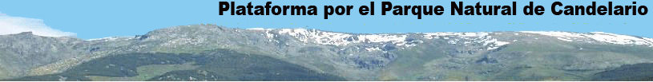

INICIO
-
Enlaces
Correo Electrónico
-
Enlaces
-
Suscripción a Novedades
Las amenazas
Desolación
Figuras de Protección
Parque Natural
RN 2000
Reserva de la biosfera
Flora y Fauna
¿Quiénes somos?
Presentación
Actividades
Documentos
Noticias
Legislación
Enlaces
Enlaces
Medios informativos de Béjar y comarca
Movimientos ecologistas y conservacionistas
En defensa de las montañas
Parques Naturales
Educación ambiental
Delitos ecológicos
Turismo sostenible
Biodiversidad
Cambio climático
Especulación urbanística
Enlaces institucionales
Noticias medioambientales
Montañas (Senderismo, rutas, etc.)
Medios informativos de Béjar y Salamanca
Noticias de Candelario
Candelario. Biz
Blog Candelario Opina
i-béjar
To-Béjar
Bejarnoticias
Bejar.biz
Salamanca 24 Horas
Movimientos ecologistas y Conservacionistas
Ecologistas en Acción. Salamanca
Visita la Web de la Plataforma Antitérmica del Tormes
Los Verdes
Amigos de la Tierra
SEO - Salamanca
Asociacion Soriana para la defensa y estudio de la Naturaleza
Grupo Ecologista Alagón
Asociación Ecologista Centaurea
WWF/Adena
Greenpeace España
En defensa de la Montañas
Red Montañas
Alianza para las montañas
Plataforma en defensa de San Glorio
Esqui San Glorio (Blog)
Plataforma en defensa de las montañas de Aragón
Fuentes de Invierno
Salvemos el Valle de Arreu
Asociación Larra - Belagua
Espelunciecha
Educación ambiental
Asociación de educadores ambientales de Castilla y León
Formación y educación ambiental. MMA
Delitos ecológicos
Mecanismos legales para la defensa del medio ambiente
Manual de procedimiento de denuncias y solicitudes ambientales
Guía práctica de los delitos ecológicos
Información general sobre el procedimiento para presentar una petición al Parlamento Europeo
Turismo sostenible
Turismo Sostenible. Info
Turismo Sostenible. Org
Turismo Sostenible.es
Ecoturismo en España
Gredos Vivo
. Itinerarios Ornitológicos por la Sierra de Gredos
Compañia de Guías de Gredos
Feria Internacional del Turismo Ornitológico
Observar aves en Navarra
Biodiversidad
Fundación Bio-diversidad
Cambio Climático
Cambio Climático
Cambio Climático Global
Frena el Cambio Climático
Especulación urbanística
Asociación Abusos Urbanísticos No en EXTremadura
Ciudadanos contra la especulación
Red andaluza en defensa del territorio
La región de Murcia no se vende
Coordinadora ciudadana en defensa del territorio
Campaña contra "La ciudad del Medio Ambiente" de Soria
Burbuja inmobiliaria
Enlaces institucionales
Asociación de Ayuntamientos del Alto Alagón
Tema Medio Ambiente: Junta de Castilla y León
Consejeria de Medio Ambiente. JCyL
Fundación de Patrimonio Natural de Castilla y León
Ministerio de Medio Ambiente
Noticias medioambientales
Revista ecosistemas
Portal del Medio Ambiente
El Ecolo
Infoecología
Montañas, senderismo, rutas, clubs de montaña...
Sistema Central
Club de montaña Azagaya-Gredos
Blog:"Lugares que nuestra locura nos permite descubrir"
Calzate las botas
Grupo senderista de Jerte
Parques Naturales...
Parque Nacional de Monfragüe
Hay más montañas en peligro
Mountain Wilderness de Ayllón, Guadarrama y Gredos
Plataforma en defensa de San Glorio
Plataforma en defensa de la cordillera cantábrica
Plataforma en defensa de las montañas de Aragón
Fuentes del Invierno
Red Montañas
Plataforma para la Defensa de Gistreo